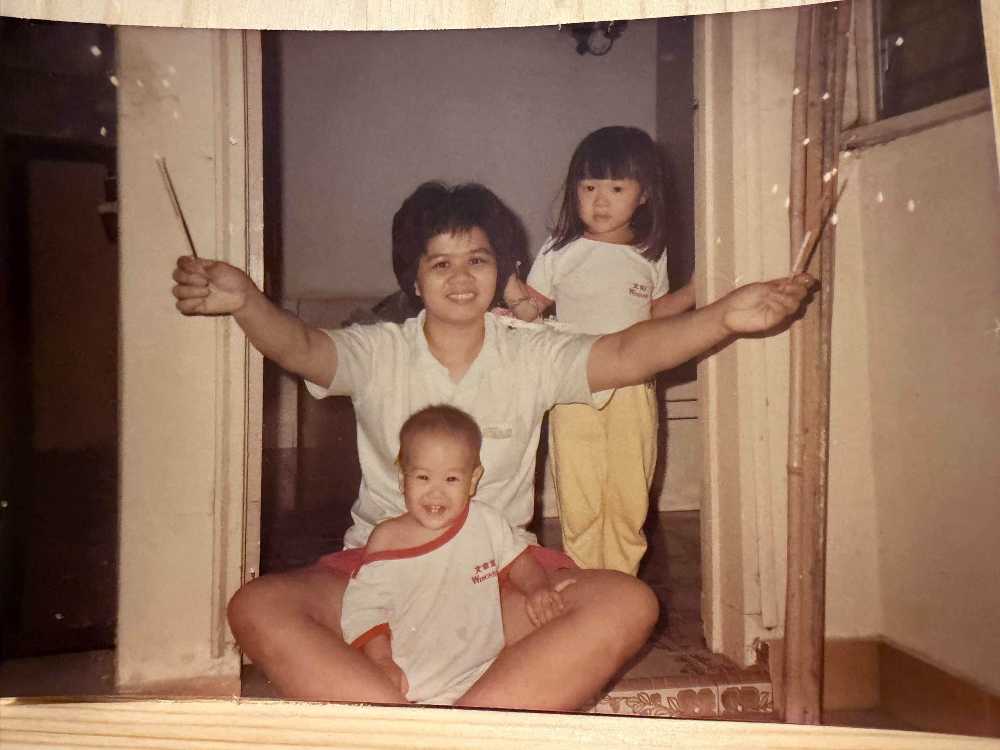

You didn't necessarily have every opportunity growing up. Being the youngest in your family, more resources and opportunities sometimes went to the older siblings, and you were the only one who didn't get the chance to go abroad. But you never let what you didn't have define what you could become. Instead, you took whatever was in your hands and found a way to make it flourish.
You have always been a woman of wisdom, with a clear and strategic mind — you always think ahead and see possibilities. I especially love that spark in your eyes whenever a new idea or perspective excites you. You are ambitious, curious, and always looking forward.

You didn't necessarily have everything growing up — but you never let what you didn't have define what you could become.
Things seem to grow under your care — including the three of us. You raised three very different children and found ways to guide each. Behind all that strength, you have a very big heart: the Boys' Brigade, the old folks in Kulai, underprivileged children, schools. When you believe someone deserves a chance, you don't just talk about helping — you find a way to do something.
What I wish for you in the years ahead: good health, freedom to enjoy life on your own terms, and faith to keep you through every season. And the same for Dad — so both of you can enjoy many more years together doing the things you love.